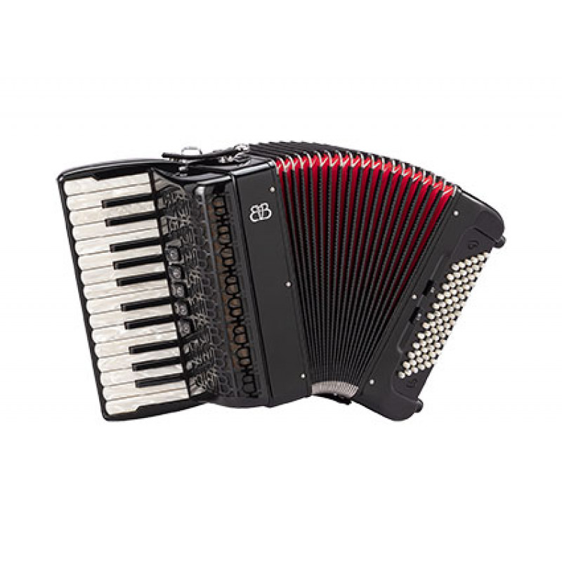

Аккордеон
Аккордеон - уникальный клавишный музыкальный инструмент. Этот портативный инструмент имеет клавиши, схожие с клавишами фортепиано, и создает звук путем воздействия на воздух, который пропускается через металлические лепестки внутри инструмента.
Аккордеоны используются в различных музыкальных жанрах, включая фольклор, джаз, танго и популярную музыку. Их уникальное звучание делает их неповторимыми и очень распознаваемыми.
Этот инструмент играет важную роль в музыкальной традиции Европы. Он был разработан в первой половине 19 века и с тех пор стал неотъемлемой частью многих музыкальных ансамблей и оркестров.
Игрок на аккордеоне может одновременно управлять мелодией и аккомпанементом, что делает его универсальным инструментом для создания богатого и полного звучания. Независимо от жанра, аккордеон добавляет яркость и экспрессивность в музыкальное исполнение, делая его непременным элементом европейской музыкальной культуры.